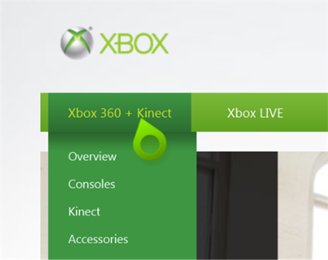
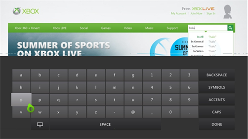
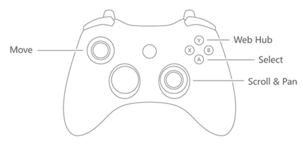
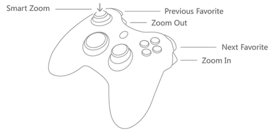

Internet Explorer for Xbox Developer's Guide
Input Methods
Free Cursor
A free-floating cursor model (pictured in the following image) is used across Internet Explorer for Xbox. A cursor lets users seamlessly interact with every part of the browser the same way � users can point and click on webpage links, the address bar, the Web Hub, settings, or informational messages. When the cursor is moved to the edges of the screen, the webpage is automatically scrolled or panned so that it�s easy to navigate webpages with just the left thumbstick and the �A� button.
On-screen keyboard
For users without an Xbox SmartGlass device, keyboard, or an Xbox 360 Chatpad, an on-screen keyboard is used for text entry:
Controller and Xbox 360
The Xbox controller can be used to control all browser features:
 Xbox SmartGlass
Xbox SmartGlass is software that you can run on your smartphone or tablet (Windows Phone, Windows 8, iOS, Android) to connect to your Xbox. Using Internet Explorer 9, you can use Xbox SmartGlass as a second screen and a controller. Using touch-enabled devices, you can use your device like a track pad to move the cursor, and you can type with the touch keyboard on your device.
Voice
The Kinect Sensor lets users navigate seamlessly among their favorite websites and commonly used browser functions. While voice can't be used to navigate specific links within a webpage, there is support for common controls such as Go Back / Forward to move between pages, and Play / Pause for HTML5 video.
Supported voice commands
|
Web Hub
|
|
|
�Go Back� |
Go to next item in the back stack |
|
�Go Forward� |
Go to next item in the forward stack |
|
�Hide Web Hub� |
Hides Web Hub |
|
�Show Keyboard� |
Brings up virtual keyboard |
|
�Hide Keyboard� |
Hides virtual keyboard |
|
�Add Favorite� |
Adds webpage to Favorites |
|
�Remove Favorite� |
Removes webpage from Favorites |
|
�Settings� |
Web Hub |
|
�Favorites� |
Opens Favorites list |
|
�Recent���������������������������������������������� |
Opens Recent list |
|
�Featured� |
Opens Featured list |
|
�Item������������������������������������������������ |
Opens a site (within Recent list) |
|
�Site Name� (dynamic) |
Opens a site (within Featured list) |
|
�Site Name� (dynamic/user customizable) |
Opens a site (within Favorites list) |
|
Webpage level
|
|
|
�Go Back� |
Go to next item in the back stack |
|
�Go Forward� |
Go to next item in the forward stack |
|
�Web Hub� |
Opens Web Hub to last viewed state |
|
�Favorites� |
Opens Web Hub to Favorites list |
|
�Add Favorite� |
Adds webpage to Favorites |
|
�Remove Favorite� |
Removes webpage from Favorites |
|
�Previous Favorite� |
Go to previous item in Favorites list |
|
�Next Favorite� |
Go to next item in Favorites list |
|
�Settings� |
Web Hub |
|
�Play� |
Plays on screen video |
|
�Pause������������������������������������������������ |
Pauses on screen video |
|
�Full Screen� |
Opens on screen video in full screen |